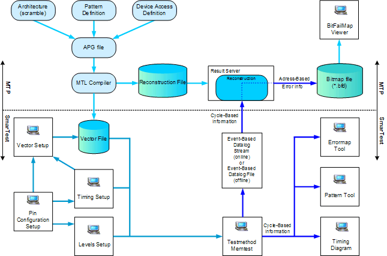

HSM software overview
The HSM software consists of two separate parts:
- SmarTest:
- Provides the setup tools defining the pin configuration, the level setups, the timing setups and the test itself, where an APG pattern can be included.
- Provides the ability to execute a test that contains an APG pattern and allows the user to review the results of the test in the cycle-based result windows, timing diagram, error map and pattern debug tool.
- Memory Test Plus (MTP) software is a collection of tools for memory pattern generation and analysis.
The figure below shows an overview of the various memory-specific tools.
